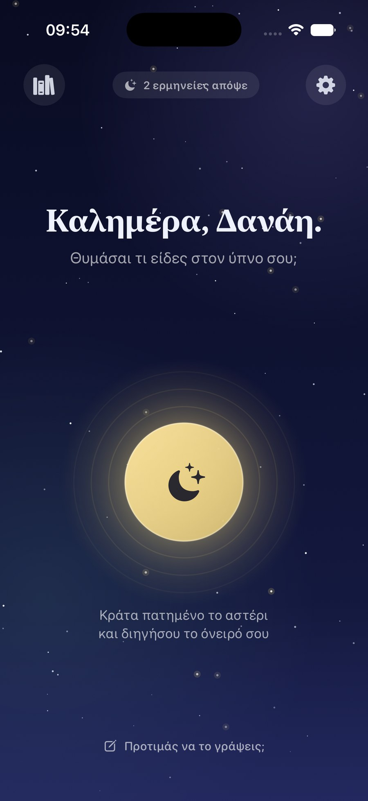
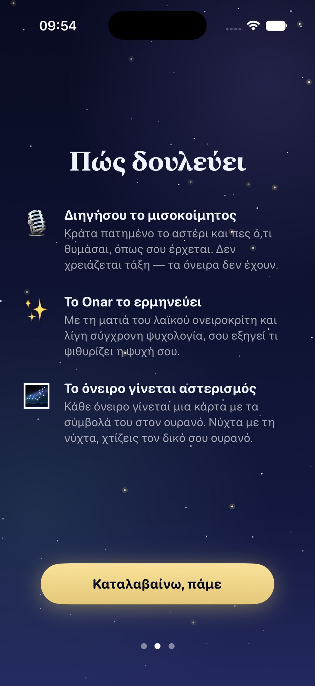
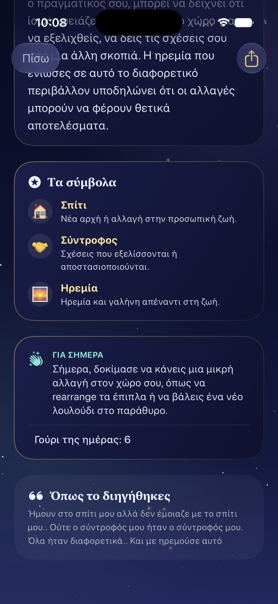

🌙
Onar
Ο ονειροκρίτης που ακούει.
Μόλις ξυπνήσεις, κράτα πατημένο το χρυσό αστέρι και διηγήσου το όνειρό σου — πριν προλάβει να φύγει. Το Onar το ακούει, το ερμηνεύει με τη ματιά της ελληνικής λαϊκής παράδοσης (και λίγη σύγχρονη ψυχολογία) και το κάνει αστερισμό.
Στο App Storeγια iPhone, δωρεάν


🎙️
Μίλα, μην πληκτρολογείς
Με μισοκοίμητη φωνή, στα ελληνικά. Η ηχογράφηση δεν αποθηκεύεται ποτέ.
📜
Λαϊκή παράδοση
Τα δόντια, το φίδι, οι πεθαμένοι, ο γάμος — όπως τα έλεγε η γιαγιά, με μια ήπια ψυχολογική ματιά.
🌌
Κάρτα-αστερισμός
Κάθε όνειρο γίνεται ένας μικρός ουρανός με τα σύμβολά του, έτοιμος για κοινοποίηση.
Βαθύς Ύπνος
Απεριόριστες ερμηνείες και Βαθιά Ανάγνωση — τι λέει το όνειρο για την αγάπη, τη δουλειά κι εσένα — συν τον πλήρη προσωπικό σου ουρανό από σύμβολα.
Εφάπαξ αγορά 4,99 €. Χωρίς συνδρομές, ποτέ.